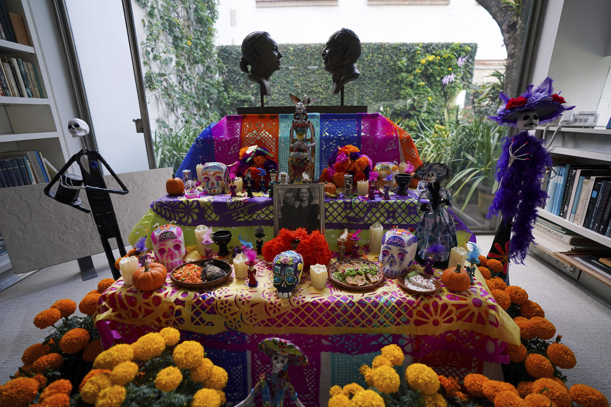

Discover the traditions, history, and profound cultural significance of this annual celebration.
The central element of Día de los Muertos is the **ofrenda**, or altar. These aren't built for worship, but rather as welcoming tributes to the deceased. They are stacked with the four elements of nature—water, air, earth, and fire—represented by objects.
The roots of Día de los Muertos trace back thousands of years to indigenous cultures, particularly the **Aztec** civilization. They viewed mourning the dead as disrespectful. Instead, they celebrated the lives of the deceased, believing their spirits returned once a year. This tradition was eventually blended with European Catholic holidays (All Saints' Day and All Souls' Day) after colonization.
Explore Other Mexican Festivals